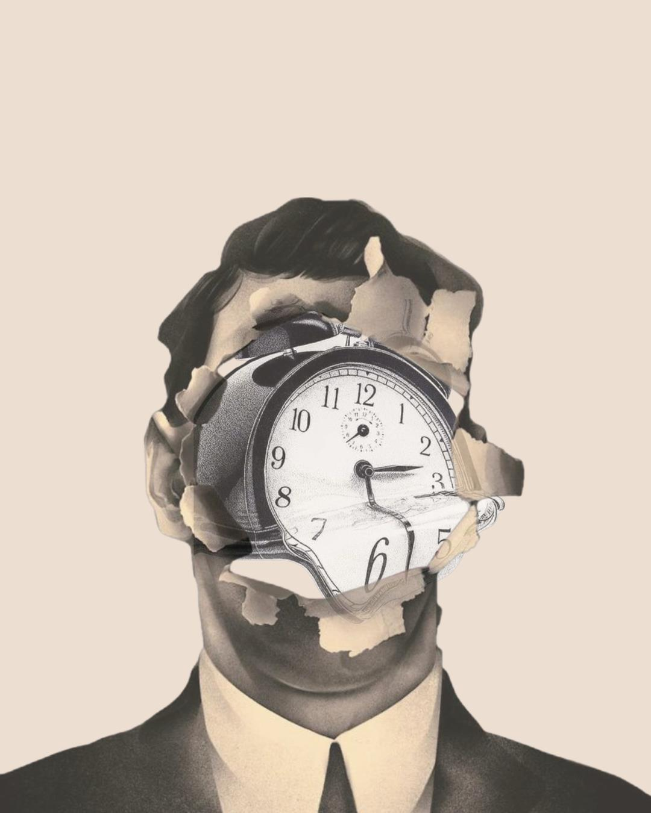

Pornografia A Pornografia: Uma Análise de Seu Impacto Danoso na Sexualidade e nos Direitos de Gênero 25 de outubro de 2025
Gênero Gênero como Aspecto Hierárquico na Obra "O Segundo Sexo"de Simone de Beauvoir 25 de outubro de 2025
Sociedade Teoria das Janelas Quebradas: O Impacto das Pequenas Falhas, e a Relação com a Criminalidade e Desigualdade Social 28 de outubro de 2025
Direito  O direito não socorre aos que dormem, mas... E quem não dorme, só não tem acesso à informação? 28 de outubro de 2025
Imigração A Instrumentalização dos Direitos das Mulheres na União Europeia como Bode Expiatório para Políticas Anti-Imigratórias 29 de outubro de 2025
Violência Reflexões sobre a violência policial e a responsabilidade individual. O meio influencia mas não determina 03 de novembro de 2025